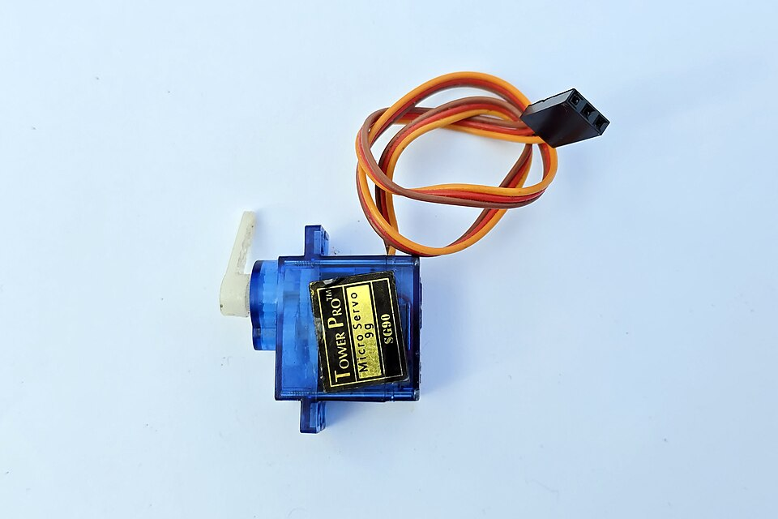
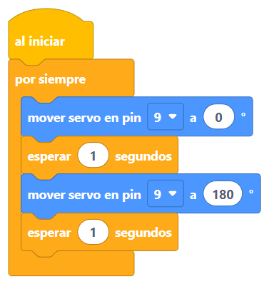
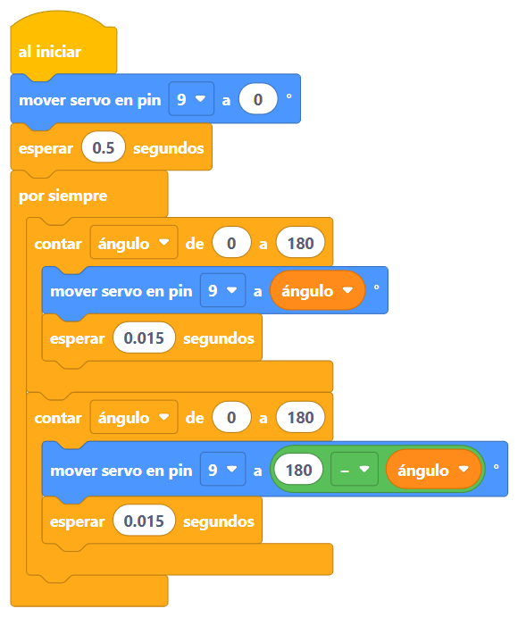

Ya sabes hacer luz y sonido.
Hoy llega el movimiento… ¡y con él, la barrera del tren! 🚂
Antes de partir
Luz ✅ y sonido ✅…
hoy llega el movimiento 🦾
Dos formas de moverse
Gira y gira sin parar. No sabe dónde está ni dónde parar. Sirve para ruedas y ventiladores.
Va al ángulo que le pidas y se queda ahí, firme. Sirve para barreras, brazos y timones.
Hoy usamos el servo: es el que obedece órdenes exactas. 🎯
Abramos la cajita

Adentro hay tres cosas:
Gracias al espía, el servo se da cuenta si alguien le mueve el brazo… y vuelve solito a su posición.
Pruébalo tú
El bloque que lo ordena, de Movimiento:
mover servo en pin 9 a 90 °
El SG90 solo da media vuelta: de 0 a 180 grados. No puede dar vueltas completas.
Tu primer programa con el servo

mover servo en pin 9 a 0 ° ¡Al ángulo 0!
esperar 1 segundos ¡Espera! Dale tiempo de llegar ⏳
mover servo en pin 9 a 180 ° ¡Ahora al 180!
esperar 1 segundos Y tiempo de volver.
Por dentro, mover un servo es complicadísimo… pero alguien ya lo resolvió y lo regaló: una librería. Proyecto: sketches/sesion-06/servo/servo.bloquino
¡Manos a la obra!
Una idea nueva de programación
Para mover el servo pasito a pasito habría que poner 181 bloques casi iguales. Mejor: decirle al cerebrito que repita él, contando. Ese bloque es contar, de Control.
ade 1a 5La a es una cajita como las de la sesión 4: parte en 1 y contar le suma uno en cada vuelta. Dos bloques… ¡y el cerebrito escribe cinco números! (En Bloquino se ven en el Monitor serie, bajo los bloques.)
Práctica

Proyecto: sketches/sesion-06/barrido/barrido.bloquino ·
Un sensor nuevo
Lo que lee el bloque, de Sensores:
perilla en pin A0 = 50
El botón solo sabía decir sí o no. La perilla dice cuánto: del 0 al 100.
Eso es una entrada analógica: no es un interruptor, es un dimmer.
¿Te acuerdas del espía que el servo lleva adentro para saber su ángulo? ¡Es justamente una de estas perillas! 🕵️
El traductor de números
mover servo en pin 9 a asignar perilla en pin A0 del rango 0 - 100 al rango 0 - 180 °
El bloque verde asignar, de Operadores, traduce: lo que dice la perilla (0-100) pasa a grados (0-180).
¡Manos a la obra!
perilla = 50 → servo en 90°
Acabas de armar un control con perilla, como el volumen de una radio… ¡pero que mueve cosas! 🕹️
⭐ Proyecto de la sesión
Es el corazón del proyecto final de la sesión 10. ¡Hoy ya lo tienes funcionando!
⭐ Reto de la sesión
Con un palito de helado pegado al brazo del servo, haz que salude: rápido, lento, o solo cuando aprietas el botón.
Cuidado: nunca fuerces el brazo del servo con la mano. Los engranajes son de plástico y se saltan. 🦷
Duelo de cerebritos
Lo lograste
Hoy aprendiste ángulos, a repetir contando y la perilla mágica…
y armaste la barrera del proyecto final.
El murciélago: un sensor que mide distancias con ecos. ¡Y el sensor de retroceso para la bici!